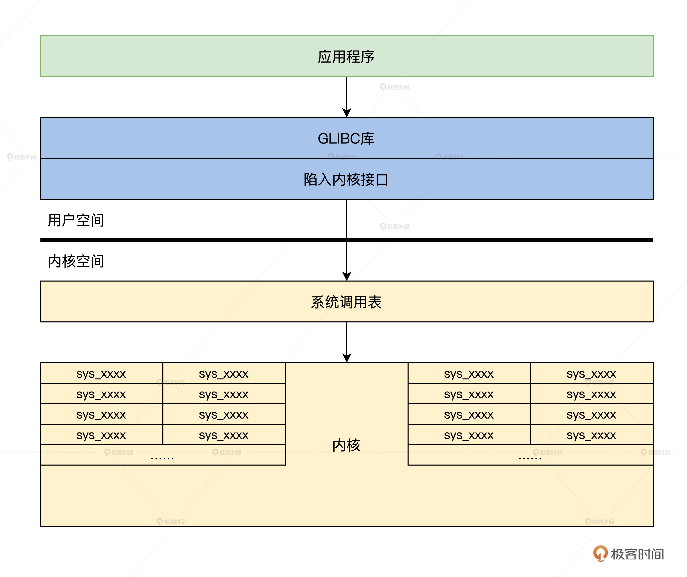
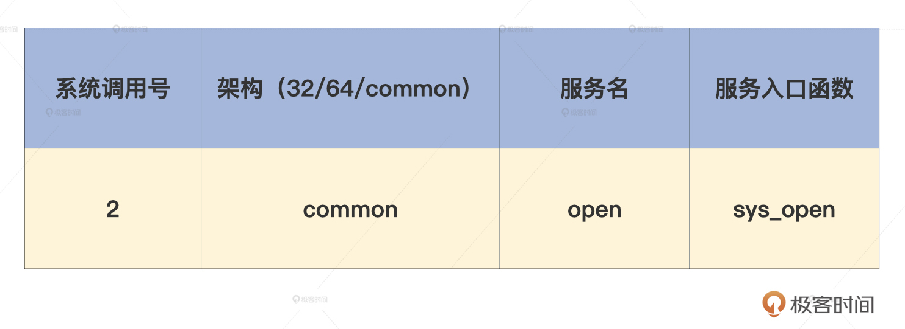
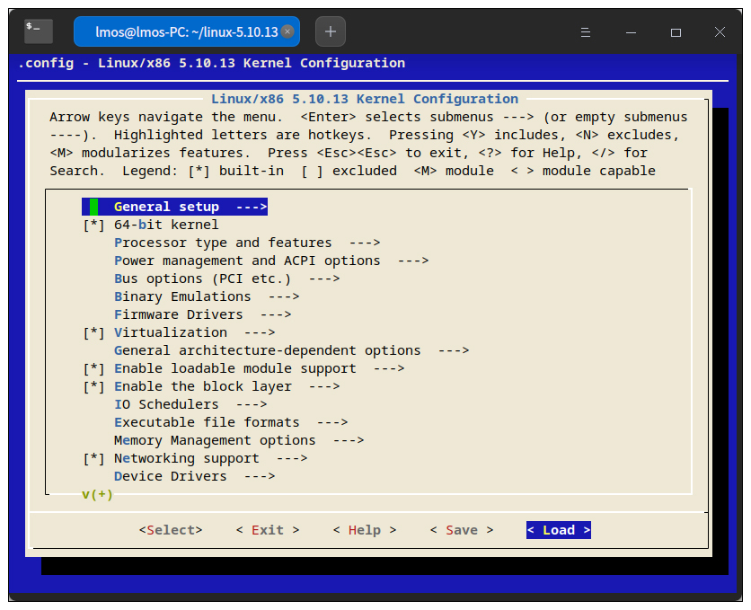

- 00 开篇词 为什么要学写一个操作系统？.md
- 00 编辑手记 升级认知，迭代自己的操作系统.md
- 01 程序的运行过程：从代码到机器运行.md
- 02 几行汇编几行C：实现一个最简单的内核.md
- 03 黑盒之中有什么：内核结构与设计.md
- 04 震撼的Linux全景图：业界成熟的内核架构长什么样？.md
- 05 CPU工作模式：执行程序的三种模式.md
- 06 虚幻与真实：程序中的地址如何转换？.md
- 07 Cache与内存：程序放在哪儿？.md
- 08 锁：并发操作中，解决数据同步的四种方法.md
- 09 瞧一瞧Linux：Linux的自旋锁和信号量如何实现？.md
- 10 设置工作模式与环境（上）：建立计算机.md
- 11 设置工作模式与环境（中）：建造二级引导器.md
- 12 设置工作模式与环境（下）：探查和收集信息.md
- 13 第一个C函数：如何实现板级初始化？.md
- 14 Linux初始化（上）：GRUB与vmlinuz的结构.md
- 15 Linux初始化（下）：从_start到第一个进程.md
- 16 划分土地（上）：如何划分与组织内存？.md
- 17 划分土地（中）：如何实现内存页面初始化？.md
- 18 划分土地（下）：如何实现内存页的分配与释放？.md
- 19 土地不能浪费：如何管理内存对象？.md
- 20 土地需求扩大与保障：如何表示虚拟内存？.md
- 21 土地需求扩大与保障：如何分配和释放虚拟内存？.md
- 22 瞧一瞧Linux：伙伴系统如何分配内存？.md
- 23 瞧一瞧Linux：SLAB如何分配内存？.md
- 24 活动的描述：到底什么是进程？.md
- 25 多个活动要安排（上）：多进程如何调度？.md
- 26 多个活动要安排（下）：如何实现进程的等待与唤醒机制？.md
- 27 瞧一瞧Linux：Linux如何实现进程与进程调度_.md
- 28 部门分类：如何表示设备类型与设备驱动？.md
- 29 部门建立：如何在内核中注册设备？.md
- 30 部门响应：设备如何处理内核I_O包？.md
- 31 瞧一瞧Linux：如何获取所有设备信息？.md
- 32 仓库结构：如何组织文件_.md
- 33 仓库划分：文件系统的格式化操作.md
- 34 仓库管理：如何实现文件的六大基本操作？.md
- 35 瞧一瞧Linux：虚拟文件系统如何管理文件？.md
- 36 从URL到网卡：如何全局观察网络数据流动？.md
- 37 从内核到应用：网络数据在内核中如何流转.md
- 38 从单排到团战：详解操作系统的宏观网络架构.md
- 39 瞧一瞧Linux：详解socket实现与网络编程接口.md
- 40 瞧一瞧Linux：详解socket的接口实现.md
- 41 服务接口：如何搭建沟通桥梁？.md
- 42 瞧一瞧Linux：如何实现系统API？.md
- 43 虚拟机内核：KVM是什么？.md
- 44 容器：如何理解容器的实现机制？.md
- 45 ARM新宠：苹果的M1芯片因何而快？.md
- 46 AArch64体系：ARM最新编程架构模型剖析.md
- LMOS来信：第二季课程带你“手撕”计算机基础.md
- 大咖助场 以无法为有法，以无限为有限.md
- 用户故事 yiyang：我的上机实验“爬坑指南”.md
- 用户故事 成为面向“知识库”的工程师.md
- 用户故事 技术人如何做选择，路才越走越宽？.md
- 用户故事 操作系统发烧友：看不懂？因为你没动手.md
- 用户故事 用好动态调试，助力课程学习.md
- 用户故事 艾同学：路虽远，行则将至.md
- 结束语 生活可以一地鸡毛，但操作系统却是心中的光.md
42 瞧一瞧Linux：如何实现系统API？
你好，我是LMOS。
上节课，我们通过实现一个获取时间的系统服务，学习了Cosmos里如何建立一个系统服务接口。Cosmos为应用程序提供服务的过程大致是这样的：应用程序先设置服务参数，然后通过int指令进入内核，由Cosmos内核运行相应的服务函数，最后为应用程序提供所需服务。
不知道你是否好奇过业内成熟的Linux内核，又是怎样为应用程序提供服务的呢？
这节课我们就来看看Linux内核是如何实现这一过程的，我们首先了解一下Linux内核有多少API接口，然后了解一下Linux内核API接口的架构，最后，我们动手为Linux内核增加一个全新的API，并实现相应的功能。
下面让我们开始吧！这节课的配套代码你可以从这里下载。
Linux内核API接口的架构
在上节课中，我们已经熟悉了我们自己的Cosmos内核服务接口的架构，由应用程序调用库函数，再由库函数调用API入口函数，进入内核函数执行系统服务。
其实对于Linux内核也是一样，应用程序会调用库函数，在库函数中调用API入口函数，触发中断进入Linux内核执行系统调用，完成相应的功能服务。
在Linux内核之上，使用最广泛的C库是glibc，其中包括C标准库的实现，也包括所有和系统API对应的库接口函数。几乎所有C程序都要调用glibc的库函数，所以glibc是Linux内核上C程序运行的基础。
下面我们以open库函数为例分析一下，看看open是如何进入Linux内核调用相关的系统调用的。glibc虽然开源了，但是并没有在Linux内核代码之中，你需要从这里下载并解压，open函数代码如下所示。
//glibc/intl/loadmsgcat.c
#ifdef _LIBC
# define open(name, flags) __open_nocancel (name, flags)
# define close(fd) __close_nocancel_nostatus (fd)
#endif
//glibc/sysdeps/unix/sysv/linux/open_nocancel.c
int __open_nocancel (const char *file, int oflag, ...)
{
int mode = 0;
if (__OPEN_NEEDS_MODE (oflag))
{
va_list arg;
va_start (arg, oflag);//解决可变参数
mode = va_arg (arg, int);
va_end (arg);
}
return INLINE_SYSCALL_CALL (openat, AT_FDCWD, file, oflag, mode);
}
//glibc/sysdeps/unix/sysdep.h
//这是为了解决不同参数数量的问题
#define __INLINE_SYSCALL0(name) \
INLINE_SYSCALL (name, 0)
#define __INLINE_SYSCALL1(name, a1) \
INLINE_SYSCALL (name, 1, a1)
#define __INLINE_SYSCALL2(name, a1, a2) \
INLINE_SYSCALL (name, 2, a1, a2)
#define __INLINE_SYSCALL3(name, a1, a2, a3) \
INLINE_SYSCALL (name, 3, a1, a2, a3)
#define __INLINE_SYSCALL_NARGS_X(a,b,c,d,e,f,g,h,n,...) n
#define __INLINE_SYSCALL_NARGS(...) \
__INLINE_SYSCALL_NARGS_X (__VA_ARGS__,7,6,5,4,3,2,1,0,)
#define __INLINE_SYSCALL_DISP(b,...) \
__SYSCALL_CONCAT (b,__INLINE_SYSCALL_NARGS(__VA_ARGS__))(__VA_ARGS__)
#define INLINE_SYSCALL_CALL(...) \
__INLINE_SYSCALL_DISP (__INLINE_SYSCALL, __VA_ARGS__)
//glibc/sysdeps/unix/sysv/linux/sysdep.h
//关键是这个宏
#define INLINE_SYSCALL(name, nr, args...) \
({ \
long int sc_ret = INTERNAL_SYSCALL (name, nr, args); \
__glibc_unlikely (INTERNAL_SYSCALL_ERROR_P (sc_ret)) \
? SYSCALL_ERROR_LABEL (INTERNAL_SYSCALL_ERRNO (sc_ret)) \
: sc_ret; \
})
#define INTERNAL_SYSCALL(name, nr, args...) \
internal_syscall##nr (SYS_ify (name), args)
#define INTERNAL_SYSCALL_NCS(number, nr, args...) \
internal_syscall##nr (number, args)
//这是需要6个参数的宏
#define internal_syscall6(number, arg1, arg2, arg3, arg4, arg5, arg6) \
({ \
unsigned long int resultvar; \
TYPEFY (arg6, __arg6) = ARGIFY (arg6); \
TYPEFY (arg5, __arg5) = ARGIFY (arg5); \
TYPEFY (arg4, __arg4) = ARGIFY (arg4); \
TYPEFY (arg3, __arg3) = ARGIFY (arg3); \
TYPEFY (arg2, __arg2) = ARGIFY (arg2); \
TYPEFY (arg1, __arg1) = ARGIFY (arg1); \
register TYPEFY (arg6, _a6) asm ("r9") = __arg6; \
register TYPEFY (arg5, _a5) asm ("r8") = __arg5; \
register TYPEFY (arg4, _a4) asm ("r10") = __arg4; \
register TYPEFY (arg3, _a3) asm ("rdx") = __arg3; \
register TYPEFY (arg2, _a2) asm ("rsi") = __arg2; \
register TYPEFY (arg1, _a1) asm ("rdi") = __arg1; \
asm volatile ( \
"syscall\n\t" \
: "=a" (resultvar) \
: "0" (number), "r" (_a1), "r" (_a2), "r" (_a3), "r" (_a4), \
"r" (_a5), "r" (_a6) \
: "memory", REGISTERS_CLOBBERED_BY_SYSCALL); \
(long int) resultvar; \
})
上述代码中，我们可以清楚地看到，open只是宏，实际工作的是__open_nocancel函数，其中会用INLINE_SYSCALL_CALL宏经过一系列替换，最终根据参数的个数替换成相应的internal_syscall##nr宏。
比如有6个参数，就会替换成internal_syscall6。其中number是系统调用号，参数通过寄存器传递的。但是这里我们没有发现int指令，这是因为这里用到的指令是最新处理器为其设计的系统调用指令syscall。这个指令和int指令一样，都可以让CPU跳转到特定的地址上，只不过不经过中断门，系统调用返回时要用sysexit指令。
好了，我们已经了解了这个open函数的调用流程，如果用一幅图来展示Linux内核API的架构，就会呈现后面这个样子。

有了前面代码流程分析和结构示意图，我想你会对Linux内核API的框架结构加深了解。上图中的系统调用表和许多sys_xxxx函数你可能不太明白，别担心，我们后面就会讲到。
那么Linux系统有多少个API呢？我们一起去看看吧。
Linux内核有多少API接口
Linux作为比较成熟的操作系统，功能完善，它以众多API接口的方式向应用程序提供文件、网络、进程、时间等待服务，并且完美执行了国际posix标准。
Linux从最初几十个API接口，现在已经发展到了几百个API接口，从这里你可以预见到Linux内核功能增加的速度与数量。那么现在的Linux内核究竟有多少个API接口呢？我们还是要来看看最新发布的Linux内核版本，才能准确知道。
具体我们需要对Linux代码进行编译，在编译的过程中，根据syscall_32.tbl和syscall_64.tbl生成自己的syscalls_32.h和syscalls_64.h文件。
生成方式在 arch/x86/entry/syscalls/Makefile 文件中。这里面会使用两个脚本，即syscallhdr.sh、syscalltbl.sh，它们最终生成的 syscalls_32.h 和 syscalls_64.h两个文件中就保存了系统调用号和系统调用实现函数之间的对应关系，在里面可以看到Linux内核的系统调用号，即API号，代码如下所示。
//linux/arch/x86/include/generated/asm/syscalls_64.h
__SYSCALL_COMMON(0, sys_read)
__SYSCALL_COMMON(1, sys_write)
__SYSCALL_COMMON(2, sys_open)
__SYSCALL_COMMON(3, sys_close)
__SYSCALL_COMMON(4, sys_newstat)
__SYSCALL_COMMON(5, sys_newfstat)
__SYSCALL_COMMON(6, sys_newlstat)
__SYSCALL_COMMON(7, sys_poll)
__SYSCALL_COMMON(8, sys_lseek)
//……
__SYSCALL_COMMON(435, sys_clone3)
__SYSCALL_COMMON(436, sys_close_range)
__SYSCALL_COMMON(437, sys_openat2)
__SYSCALL_COMMON(438, sys_pidfd_getfd)
__SYSCALL_COMMON(439, sys_faccessat2)
__SYSCALL_COMMON(440, sys_process_madvise)
//linux/arch/x86/include/generated/uapi/asm/unistd_64.h
#define __NR_read 0
#define __NR_write 1
#define __NR_open 2
#define __NR_close 3
#define __NR_stat 4
#define __NR_fstat 5
#define __NR_lstat 6
#define __NR_poll 7
#define __NR_lseek 8
//……
#define __NR_clone3 435
#define __NR_close_range 436
#define __NR_openat2 437
#define __NR_pidfd_getfd 438
#define __NR_faccessat2 439
#define __NR_process_madvise 440
#ifdef __KERNEL__
#define __NR_syscall_max 440
#endif
上述代码中，已经定义了__NR_syscall_max为440，这说明Linux内核一共有441个系统调用，而系统调用号从0开始到440结束，所以最后一个系统调用是sys_process_madvise。
其实，__SYSCALL_COMMON除了表示系统调用号和系统调用函数之间的关系，还会在Linux内核的系统调用表中进行相应的展开，究竟展开成什么样子呢？我们一起接着看一看Linux内核的系统调用表。
Linux系统调用表
Linux内核有400多个系统调用，它使用了一个函数指针数组，存放所有的系统调用函数的地址，通过数组下标就能索引到相应的系统调用。这个数组叫sys_call_table，即Linux系统调用表。
sys_call_table到底长什么样？我们来看一看代码才知道，同时也解答一下前面留下的疑问，这里还是要说明一下，__SYSCALL_COMMON首先会替换成__SYSCALL_64，因为我们编译的Linux内核是x86_64架构的，如下所示。
#define __SYSCALL_COMMON(nr, sym) __SYSCALL_64(nr, sym)
//第一次定义__SYSCALL_64
#define __SYSCALL_64(nr, sym) extern asmlinkage long sym(unsigned long, unsigned long, unsigned long, unsigned long, unsigned long, unsigned long) ;
#include <asm/syscalls_64.h>//第一次包含syscalls_64.h文件，其中的宏会被展开一次，例如__SYSCALL_COMMON(2, sys_open)会被展开成：
extern asmlinkage long sys_open(unsigned long, unsigned long, unsigned long, unsigned long, unsigned long, unsigned long) ;
这表示申明
//取消__SYSCALL_64定义
#undef __SYSCALL_64
//第二次重新定义__SYSCALL_64
#define __SYSCALL_64(nr, sym) [ nr ] = sym,
extern asmlinkage long sys_ni_syscall(unsigned long, unsigned long, unsigned long, unsigned long, unsigned long, unsigned long);
const sys_call_ptr_t sys_call_table[] ____cacheline_aligned = {
[0 ... __NR_syscall_max] = &sys_ni_syscall,//默认系统调用函数，什么都不干
#include <asm/syscalls_64.h>//包含前面生成文件
//第二次包含syscalls_64.h文件，其中的宏会被再展开一次，例如__SYSCALL_COMMON(2, sys_open)会被展开成：
[2] = sys_open, 用于初始化这个数组，即表示数组的第二个元素填入sys_open
};
int syscall_table_size = sizeof(sys_call_table);//系统调用表的大小
上述代码中，通过两次包含syscalls_64.h文件，并在其中分别定义不同的__SYSCALL_64宏，完成了系统调用函数的申明和系统调用表的初始化，不得不说这是一个非常巧妙的方式。
sys_call_table数组，第一次全部初始化为默认系统调用函数sys_ni_syscall，这个函数什么都不干，这是为了防止数组有些元素中没有函数地址，从而导致调用失败。这在内核中是非常危险的。我单独提示你这点，其实也是希望你留意这种编程技巧，这在内核编码中并不罕见，考虑到内核编程代码的安全性，加一道防线可以有备无患。
Linux系统调用实现
前面我们已经了解了Linux系统调用的架构和Linux系统调用表，也清楚了Linux系统调用的个数和定义一个Linux系统调用的方式。
为了让你更好地理解Linux系统是如何工作的，我们为现有的Linux写一个系统调用。这个系统调用的功能并不复杂，就是返回你机器的CPU数量，即你的机器是多少核心的处理器。
为Linux增加一个系统调用，其实有很多步骤，不过也别慌，下面我将一步一步为你讲解。
下载Linux源码
想为Linux系统增加一个系统调用，首先你得有Linux内核源代码，如果你机器上没有Linux内核源代码，你就要去内核官网下载，或者你也可以到GitHub上git clone一份内核代码。
如果你使用了git clone的方式，可以用如下方式操作。
git clone git://git.kernel.org/pub/scm/linux/kernel/git/stable/linux-stable.git/
如果你想尽量保持与我的Linux内核版本相同，降低出现各种未知问题的概率，那么请你使用5.10.13版本的内核。另外别忘了，如果你下载的Linux内核是压缩包，请记得先解压到一个可以访问的目录下。
申明系统调用
根据前面的知识点，可以得知Linux内核的系统调用的申明文件和信息，具体实现是这样的：由一个makefile在编译Linux系统内核时调用了一个脚本，这个脚本文件会读取另一个叫syscall_64.tbl文件，根据其中信息生成相应的文件syscall_64.h。
请注意，我这里是以x86_64架构为例进行说明的，这里我们并不关注syscall_64.h的生成原理，只关注syscall_64.tbl文件中的内容。下面我们还是结合代码看一下吧。
//linux-5.10.13/arch/x86/entry/syscalls/syscall_64.tbl
0 common read sys_read
1 common write sys_write
2 common open sys_open
3 common close sys_close
4 common stat sys_newstat
5 common fstat sys_newfstat
6 common lstat sys_newlstat
7 common poll sys_poll
8 common lseek sys_lseek
9 common mmap sys_mmap
10 common mprotect sys_mprotect
11 common munmap sys_munmap
12 common brk sys_brk
//……
435 common clone3 sys_clone3
436 common close_range sys_close_range
437 common openat2 sys_openat2
438 common pidfd_getfd sys_pidfd_getfd
439 common faccessat2 sys_faccessat2
440 common process_madvise sys_process_madvise
上面这些代码可以分成四列，分别是系统调用号、架构、服务名，以及其相对应的服务入口函数。例如系统调用open的结构，如下表所示。

那我们要如何申明自己的系统调用呢？第一步就需要在syscall_64.tbl文件中增加一项，如下所示。
441 common get_cpus sys_get_cpus
我们自己的系统调用的系统调用号是441，架构是common ，服务名称是get_cpus，服务入口函数则是sys_get_cpus。请注意系统调用号要唯一，不能和其它系统调用号冲突。
写好这个，我们还需要把sys_get_cpus函数在syscalls.h文件中申明一下，供其它内核模块引用。具体代码如下所示。
//linux-5.10.13/include/linux/syscalls.h
asmlinkage long sys_get_cpus(void);
这一步做好之后，我们就完成了一个Linux系统调用的所有申明工作。下面我们就去定义这个系统调用的服务入口函数。
定义系统调用
我们现在来定义自己的第一个Linux系统调用，为了降低工程复杂度，我们不打算新建一个C模块文件，而是直接在Linux内核代码目录下挑一个已经存在的C模块文件，并在其中定义我们自己的系统调用函数。
定义一个系统调用函数，需要使用专门的宏。根据参数不同选用不同的宏，这个宏的细节我们无须关注。对于我们这个无参数的系统调用函数，应该使用SYSCALL_DEFINE0宏来定义，代码如下所示。
//linux-5.10.13/include/linux/syscalls.h
#ifndef SYSCALL_DEFINE0
#define SYSCALL_DEFINE0(sname) \
SYSCALL_METADATA(_##sname, 0); \
asmlinkage long sys_##sname(void); \
ALLOW_ERROR_INJECTION(sys_##sname, ERRNO); \
asmlinkage long sys_##sname(void)
#endif /* SYSCALL_DEFINE0 */
//linux-5.10.13/kernel/sys.c
SYSCALL_DEFINE0(get_cpus)
{
return num_present_cpus();//获取系统中有多少CPU
}
上述代码中SYSCALL_DEFINE0会将get_cpus转换成sys_get_cpus函数。这个函数中，调用了一个Linux内核中另一个函数num_present_cpus，从名字就能推断出作用了，它负责返回系统CPU的数量。 这正是我们要达到的结果。这个结果最终会返回给调用这个系统调用的应用程序。
编译Linux内核
现在我们的Linux系统调用的代码，已经写好了，不过这跟编写内核模块还是不一样的。编写内核模块，我们只需要把内核模块动态加载到内核中，就可以直接使用了。系统调用发生在内核中，与内核是一体的，它无法独立成为可以加载的内核模块。所以我们需要重新编译内核，然后使用我们新编译的内核。
要编译内核首先是要配置内核，内核的配置操作非常简单，我们只需要源代码目录下执行“make menuconfig”指令，就会出现如下所示的界面。

图中这些菜单都可以进入子菜单或者手动选择。
但是手动选择配置项非常麻烦且危险，如果不是资深的内核玩家，不建议手动配置！但是我们可以选择加载一个已经存在的配置文件，这个配置文件可以加载你机器上boot目录下的config开头的文件，加载之后选择Save，就能保存配置并退出以上界面。
然后输入如下指令，就可以喝点茶、听听音乐，等待机器自行完成编译，编译的时间取决于机器的性能，快则十几分钟，慢则几个小时。
make -j8 bzImage && make -j8 modules
上述代码指令干了哪些事儿呢？我来说一说，首先要编译内核，然后再编译内核模块，j8表示开启8线程并行编译，这个你可以根据自己的机器CPU核心数量进行调整。
编译过程结束之后就可以开始安装新内核了，你只需要在源代码目录下，执行如下指令。
sudo make modules_install && sudo make install
上述代码指令先安装好内核模块，然后再安装内核，最后会调用update-grub，自动生成启动选项，重启计算机就可以选择启动我们自己修改的Linux内核了。
编写应用测试
相信经过上述过程，你应该已经成功启动了修改过的新内核。不过我们还不确定我们增加的系统调用是不是正常的，所以我们还要写个应用程序测试一下，其实就是去调用一下我们增加的系统调用，看看结果是不是预期的。
我们应用程序代码如下所示。
#include <stdio.h>
#include <unistd.h>
#include <sys/syscall.h>
int main(int argc, char const *argv[])
{
//syscall就是根据系统调用号调用相应的系统调用
long cpus = syscall(441);
printf("cpu num is:%d\n", cpus);//输出结果
return 0;
}
对上述代码我们使用gcc main.c -o cpus指令进行编译，运行之后就可以看到结果了，但是我们没有写库代码，而是直接使用syscall函数。这个函数可以根据系统调用号触发系统调用，根据上面定义，441正是对应咱们的sys_get_cpus系统调用。
至此，在Linux系统上增加自己的系统调用这个实验，我们就完成了。
重点回顾
今天我们从了解Linux系统的API架构开始，最后在Linux系统上实现了一个自己的系统调用，虽然增加一个系统调用步骤不少，但你只要紧跟着我的思路一定可以拿下。
下面我来为你梳理一下课程的重点。
1.从Linux系统的API架构开始，我们了解了glibc库，这个库是大部分应用程序的基础，我们以其中的open函数为例，分析了库函数如何通过寄存器传递参数，最后执行syscall指令进入Linux内核，执行系统调用，最后还归纳出一幅Linux系统API框架图。
2.然后,我们了解Linux系统中有多少个API，它们都放在系统调用表中，同时也知道了Linux系统调用表的生成方式。
3.最后，为了验证我们了解的知识是否正确，我们从申明系统调用、定义系统调用到编译内核、编写应用测试，在现有的Linux代码中增加了一个属于我们自己的系统调用。
好了，我们通过这节课搞清楚了Linux内核系统调用的实现原理。你是否感觉这和我们的Cosmos的系统服务有些相似，又有些不同？
相似的是我们都使用寄存器来传递参数，不同的是Cosmos使用了中断门进入内核，而Linux内核使用了更新的syscall指令。有了这些知识储备，我也非常期待你能动手拓展，挑战一下在Cosmos上实现使用syscall触发系统调用。
思考题
请说说syscall指令和int指令的区别，是什么？
欢迎你在留言区跟我交流互动，也推荐你把这节课分享给有需要的朋友，一起实现操作系统里的各种功能。
我是LMOS，我们下节课见。
© 2019 - 2023 Liangliang Lee. Powered by gin and hexo-theme-book.